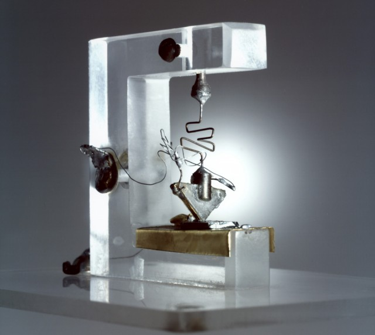
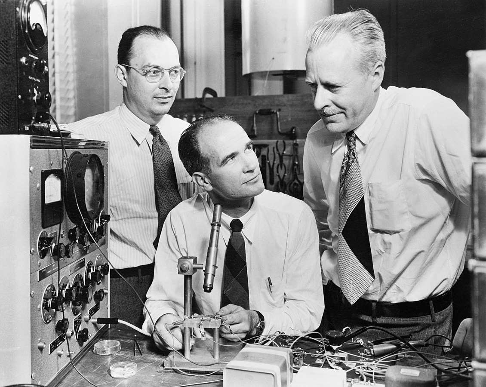

The invention of the transistor in the 1940s revolutionized the field of electronics. Before its development, cumbersome and inconsistent vacuum tubes were necessary computer components.
The transistor was invented in 1947 by John Bardeen, Walter Brattain, and William Shockley at Bell Laboratories. While their first prototype appeared quite rudimentary, and used germanium instead of silicon, the technology quickly developed and improved. Transistors became smaller and more efficient over time, and became the foundation of the microelectronics revolution.
The invention of the transistor had a significant impact on modern technology. It made electronics smaller, faster, and more efficient, leading to the development of integrated circuits, microprocessors, and countless other electronic devices that have transformed the world.
The work of Bardeen, Brattain, and Shockley earned them the Nobel Prize in Physics in 1956, and the invention of the transistor is widely considered to be one of the most important technological breakthroughs of the 20th century.